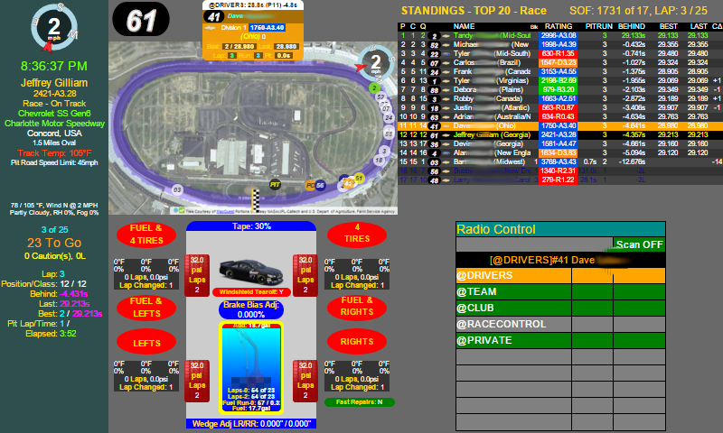

CrewChief-Large(PITCOMMANDSSIMCONTROLLER, LAPSTOAVERAGE, ALTLAPSTOAVERAGE, showFPS)
This is the Crew Chief App for a larger display.
It displays some extra information beside the PitCommander widget.
Be default, it will run in read-only mode and not send commands to the SIM.
See the PITCOMMANDSSIMCONTROLLER parameter below to change it.

NOTE: All parameters are specified in the URL.
Parameters:
| Name | Type | Description |
|---|---|---|
PITCOMMANDSSIMCONTROLLER |
boolean | If true, then this widget can send changes to the SIM. Defaults to false. |
LAPSTOAVERAGE |
boolean | The number of laps to average for the fuel mileage commands. Defaults to zero(0) or worst lap. |
ALTLAPSTOAVERAGE |
boolean | The alternate number of laps to average for the fuel mileage commands. Used when saving fuel. Defaults to 2 laps. |
showFPS |
boolean | When any value is seen in the URL for this attribute, the Frames Per Second(FPS) will be shown. Defaults to not show. |
- Since:
- 1.0
- Copyright:
- Copyright (C) 2015 - 2016 Jeffrey Gilliam
- License:
- Apache License 2.0